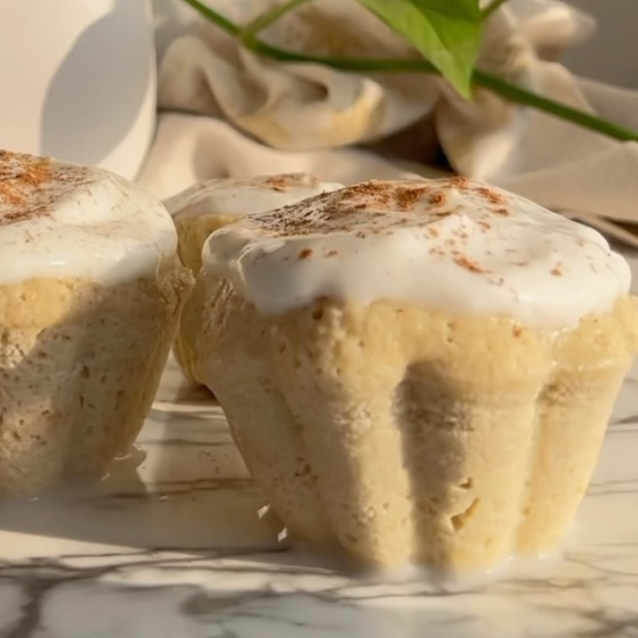

Cupcakes tres leches
Ingredientes:
- 80gr de harina de avena (sin gluten)
- 2 huevos medianos
- 1 cda de esencia de vainilla
- 1 cda de polvo de hornear
- 1/3 de bebida vegetal de coco, almendras y soja. (puedes usar los sabores que más te gusten)
- Stevia al gusto
- Ralladura de 1 limón
Instrucciones:
- Mezclar todos los ingredientes y llevarlo al microondas por 1 min (intervalos de 30 seg),
- Bañar en la mezcla de tres leches y listo